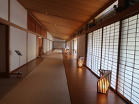 |
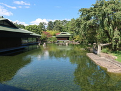 |
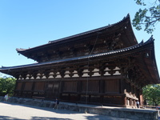 |
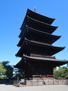 |
| Kyoto State Guest Hous | Kyoto State Guest Hous | Toji Temple | Toji Five-storied pagoda |
I took the Shinkansen from Fukutsu City to Kyoto. Immediately after arriving at Kyoto Station, I bought pork buns and chimaki for lunch at 551 Hourai, and ate them next to the bench.
Afterwards, we took a bus to the reception of Kyoto State Guest House. But it was difficult to get there from the nearest bus stop. The area is so large that it took over 30 minutes to get there. The maximum temperature was 37 degrees, so I was exhausted.
I participated in a guided tour from 12:30 to 13:50. The guest house was very luxurious, using traditional and modern advanced technology. However, the explanation was very boring for me. After the tour we walked for a very long time again, looking for the bus stop to Toji Temple. Finally, we took a taxi to the temple.
The original temple was built in 835. We saw Five-storied pagoda, the Golden Hall, and the auditorium.
Today I walked about 10km despite the high temperature. By the way, I had cramps at the hotel.
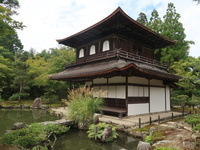 | 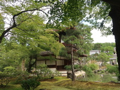 | 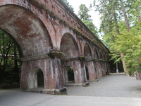 | 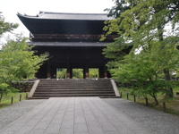 |
| Ginkakuji Temple | Ginkakuji Temple | Nanzenji Aquenduct | Nanzenji Sanmon |
Ginkakuji was also far from the nearest bus stop. Ginkaku-ji Temple, loved by General Yoshimitsu Ashikaga, had a spacious garden and a quiet, chic appearance. A foreigner I met there said, "It's beautiful!'".
Next, we took a bus to Nanzenji Temple. This temple was built in the Kamakura period, and is famous for its aqueduct and Sanmon gate. These places and buildings were well known for their photos, so I went there.
After lunch, we headed to Tatsumi Daimyojin and Tatsumi Bridge. Although this area is small, it has a unique atmosphere and is an attractive area that reminds you of good old Kyoto.
Many tourists visit Hanamikoji Street, which retains a nostalgic atmosphere.
Afterwards, we visited Kenninji Temple and Yasaka Shrine.
We walked 16 km that day.
I was tired and had no appetite, so I ended up eating at convenience stores and light meals instead of going to popular restaurants.
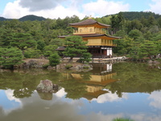 | 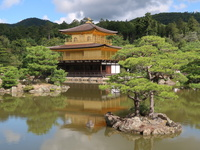 | 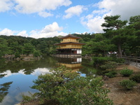 | 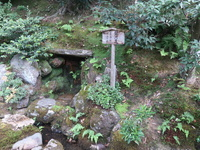 |
| Kinkakuji Temple | Kinkakuji Temple | Kinkakuji Temple | spring water at Kinkakuji |
From the pamphlet: ``In 1397, Yoshimitsu, the third Ashikaga shogun, took over the property and built Kitayama Palace, with the golden pagoda ``Kinkaku'' at its center...''
After enjoying the tour of the temple, we returned to the hotel once.
On this trip, I visited the most valuable temple for me. Although it was cloudy that day. The temple looked very beautiful with the nice garden.
In the evening we went to the resturant which before my trip I made a reservation for dinner at Hachidaime Gihei is famous for its rice. And I was satisfied with the rice and the luxurious decorations dishes that went well with it.
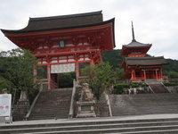 |
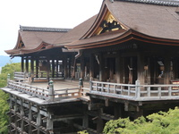 |
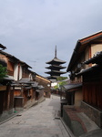 |
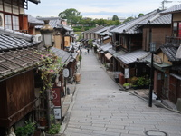 |
| Kiyomizudera Temple | Kiyomizudera Temple | Sanneizaka(slope) | Ninenzaka(slope) |
I think Kiyomizu-dera is the most famous temple in Kyoto.
Especially, Kiyomizu-dera Temple is well known for its 13-meter-high wooden stage. I certainly stepped onto the stage and tried to move around.
The area around Kiyomizu-dera Temple is also attractive.
Sannezaka and Ninenzaka that are slopes lead from Kiyomizu Temple to the town are full of old townscapes, traditional houses, and shops.
However, since it was early, most of the shops were closed.
Along the way, we were able to see Yasaka Tower, which matches the townscape, from many places.
Then, we visited Yasaka Koshin-do and Kodai-ji temples, and headed to Yasaka Shrine via Ishibe-koji and Path of Nene.
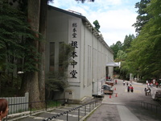 | 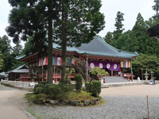 | 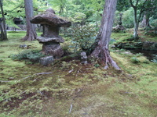 | 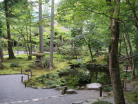 |
| Enryakuji Konponchudo Hall | Enryakuji | Ohara Sanzenin Temple | Ohara Sanzenin Temple |
It was my wife's request to visit Enryakuji Temple on Mt. Hiei. My wife probably likes the large and grand area with temples. I wasn't sure if she was satisfied, though.
We arrived at Ohara by taking a cable car and a bus. Ohara is rich in vegetables, so we ate our fill at a buffet at a local restaurant. Naturally, we visited Ohara Sanzen-in Temple and looked around the temple and wonderful garden.
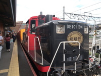 | 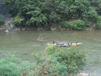 | 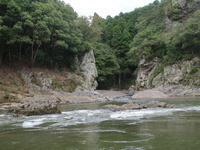 | 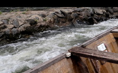 |
| Trolley train | Trolley train | Hozugawa River rafting | Hozugawa River rafting |
Trolley train is often seen on TV as the centerpiece of Kyoto shightseening. That day, we were on Trolley train, enjoying nice scenery and especialy Hozugawa River.
After getting off the train and using a bus, we rode on the boat for Hozugawa River rafting. The boat operater made us fun on explanation and joke through the time, about one hour and half. Of course we enjoyed scenery and srill, sometimes going up and down on some rapid stream.
As soon as we arrived in Arashiyama, we went to Bamboo forest path on foot. There we took a walk and had experience like one cut of Dorama.
We walked for JR Sagano Arashiyama Station, where I got off in the morning, and took a train back to the hotel.
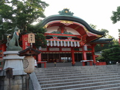 | 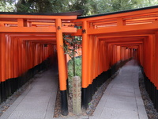 | 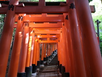 | 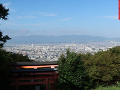 |
| Fushimi Inari Shrine | Fushimi Inari Shrine | Fushimi Inari Shrine | Fushimi Inari Shrine |
Eary in the morning we visited Fushimi Inari Shrine. Fushimi Inari Shrine has a lot of Torii, more than three thousand, which are the gate to the shrine. Through the many Torii, 35 minutes took us to "Yotutuzi" that is on the way of the top of this shrine and is also the wonderful view point.
Our sightseening had done anyway, then we went back to Kyoto station.
At Kyoto Station we ate obanzai for lunch and strolled around Kyoto Station to kill time, and then boarded the Shinkansen.
Afterword
As for the Shinkansen, it was so fast that it took less than 3 hours to get to Kyoto. I reserved a ticket on the JR online system and was able to pass through the ticket gate with one touch. I was impressed for the nice job.
Despite the high temperatures, we walked an average of 10km each day. It rained briefly for three days, but luckily the sightseeing was not interrupted.
I get very tired when I travel, and these days even walking for 15 minutes is a struggle, and I feel really old.
Even though there are no regulations, the coronavirus has not been contained yet enough.
So I was worried about encountering many people, especially foreigners, at tourist spots, so I left for my destination as early as possible in the morning. As a result, I was able to explore the sights a little more slowly.
So, I enjoyed my slightly longer trip to Kyoto, feeling both admiring and tired.
{kind=link}
{kind=link}
{kind=link}
{kind=link}
{kind=link}
{kind=link}
{kind=link}
{kind=link}
{kind=link}
{kind=link}
{kind=link}
{kind=link}
{kind=link}
{kind=link}
{kind=link}
{kind=link}
{kind=link}
{kind=link}
{kind=link}
{kind=link}
{kind=link}
{kind=link}
{kind=link}
{kind=link}
{kind=link}
{kind=link}
{kind=link}
{kind=link}